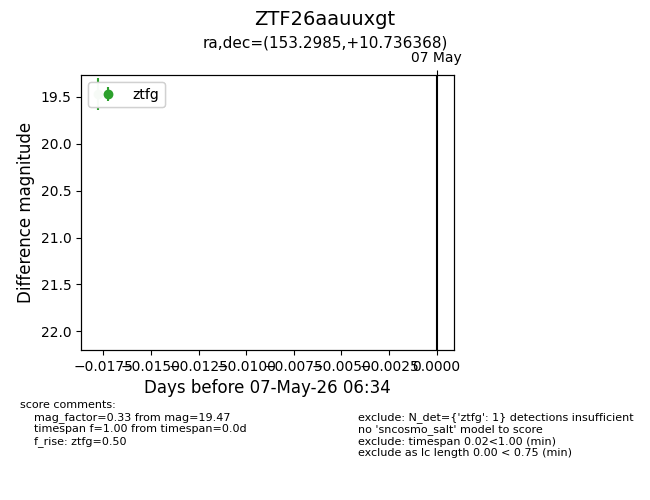
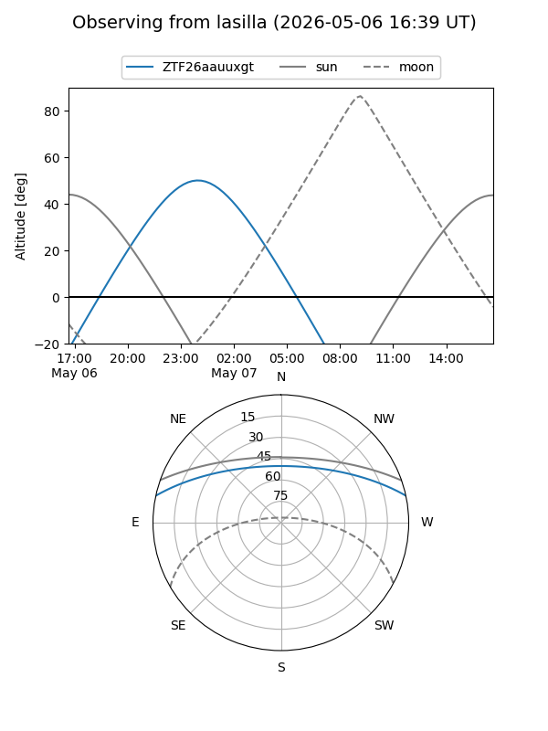
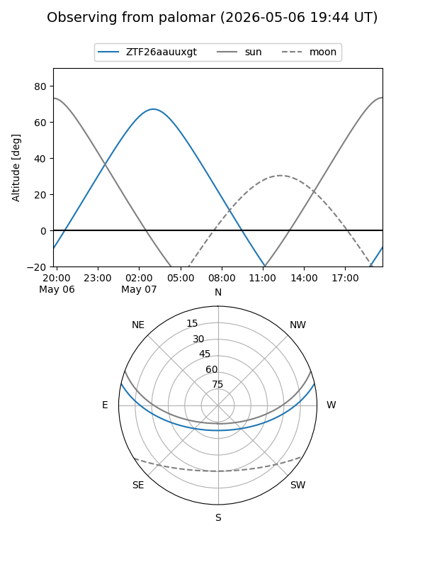

ZTF26aauuxgt
Target ZTF26aauuxgt at 2026-05-07 06:36
Aliases and brokers:
FINK: link
Lasair: link
ALeRCE: link
alt names
ZTF26aauuxgt (ztf,fink_ztf)
Coordinates:
equatorial (ra, dec) = 153.2985,+10.73637
equatorial (HMS+DMS) = 10:13:11.65,+10:44:10.92
galactic (l, b) = (228.9454,+49.38216)
Flags:
Photometry:
last ztfg=19.47
1 ztfg detections
Lightcurve

Visibility


Additional plots